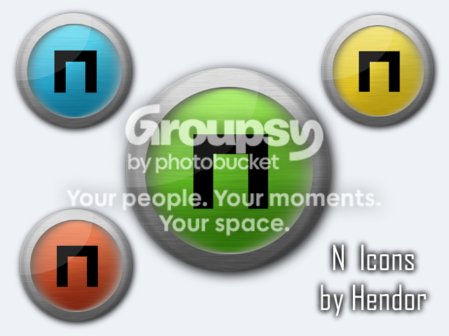

Hi! Made these today.
They are all 128x128 px so they look great either on a desktop or in an Rocket/Object Dock. The .ico files for all four colors are hosted here in a single zip file. I also tossed in the .psd file if you wanna take a look.
How to Use
1. Download the zipped folder to your desktop (or wherever you want actually.)
2. Open it and drag the icon(s) you want to the desktop.
3. Right click on the icon to N and select Properties.
4. Click on the tab in this window that says Shortcut.
5. Click on Change Icon button and select the icon that you previously dragged onto the desktop.
6. Click Apply and you're done. Place on an Object Dock for best effect.
The .psd file contains all 4 colors on different layers along with 6 other layers that make up the rest of the icon. They're also 512px for extra-goodiness. If you want to know how I made them, ask, and I'll post some instructions. Thanks.
 Incredible! Put 'em on WinCustomize or DA, these are really cool.
Incredible! Put 'em on WinCustomize or DA, these are really cool.